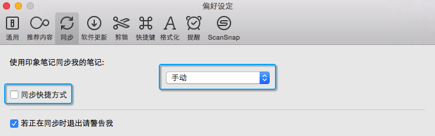
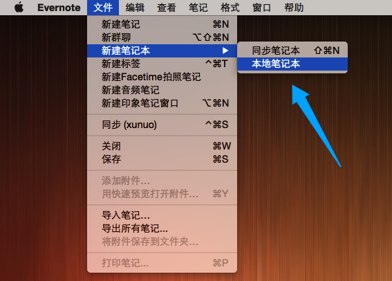

印象笔记(evernote)算是我用得最顺手的一款笔记软件了，但有些时候总担心一些敏感信息同步到云端会导致安全问题，那么问题来了…
不知不觉，我在印象笔记里面已经记了快3000条笔记了，得益于它强大的图片文本搜索、舒服的粘贴体验和方便的提醒功能，特别适合用来收集大量碎片资源，咳咳，我只是一个喜欢大象的粉丝，这篇不是软文…
因为记录太方便，难免有一些时候会偷懒记录一些敏感信息进去，比如密码什么的，万一哪天同步笔记时候被劫持… 呃，你看，又是一出悲剧是吧。
不过还好它提供了“本地笔记本”功能，这样一来就能一边继续享用它强大的功能，同时又规避掉安全问题。
那么接下来，以MAC下的Evernote国际版(v6.0.8)为例，简单的介绍一下用法，windows的同学设置应该也差不多。
首先，安全第一
如果感觉有信息泄露的风险，那么我们还是暂时先关闭掉印象笔记的自动同步功能，等整理好之后再开放，安全第一 :)
打开印象笔记主菜单 » 偏好设置 » “同步”选项卡，如下图所示设置。

如何建立「本地笔记本」
打开印象笔记主菜单 » 文件 » 新建笔记本 » 本地笔记本。

然后，起个名字吧 :)

新建一则本地笔记
建立笔记和往常一样，在本地笔记本下新建笔记即可

这时候你会发现“同步”功能是没有作用的 :)
转移「同步笔记本」内的笔记到「本地笔记本」
选取不需要同步的笔记，直接拖拽至新建的「本地笔记本」即可。
注意：转移笔记是需要时间的，移动笔记后虽然「同步笔记本」中笔记计数变为零，但是如果转移笔记较多，此时转移操作依旧在后台进行，请耐心等候，不要心急关闭应用。
恢复同步功能
别忘了，按照第一步将同步选项卡下的设置还原。
在一次同步之后，再到其它印象笔记终端观察数据，如若正常，是看不到刚才新建的「本地笔记本」，同时尝试找找那些被转移的笔记，是不是也消失得无影无踪了 :)
注意: 如果只是需要把印象笔记彻底当本地版使用，你也可以依旧保持手动同步，但是转移数据之后切记需要至少同步一次。
更高级的用法
如果你需要备份数据或有信得过的云存储产品，比如公司自己使用的云盘，也可以通过软链接的方式将印象笔记的存储文件夹映射到云盘的一个文件夹，通过这种桥接方式重新获得印象笔记的多终端共享功能。
MAC下印象笔记的本地存储路径为：1
~/Library/Application Support/com.evernote.Evernote
如果你的云盘目录是 ~/CloudDrive/，那么可以通过如下语句进行映射：1
ln -s ~/Library/Application\ Support/com.evernote.Evernote ~/CloudDrive/evernote
接着，在其它的设备上也如此设置即可。
注意：命令中的空格需要使用“\”转义，如
Application\ Support
OK，恭喜你，现在你终于有了一头“不能动”的大象，再也不会走私你的数据啦 :)